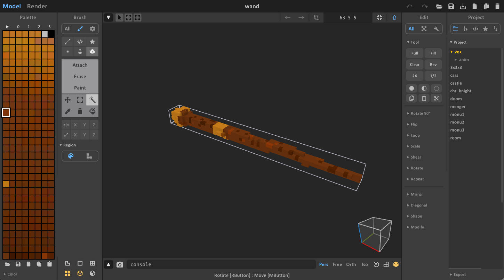
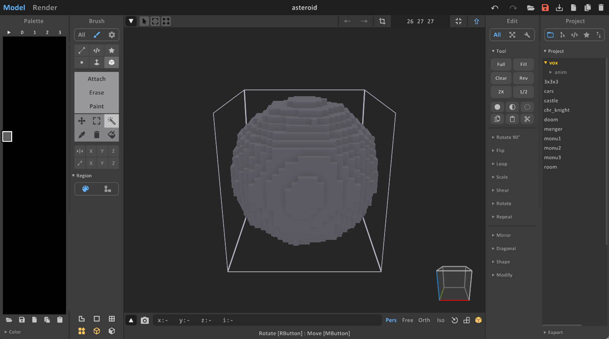
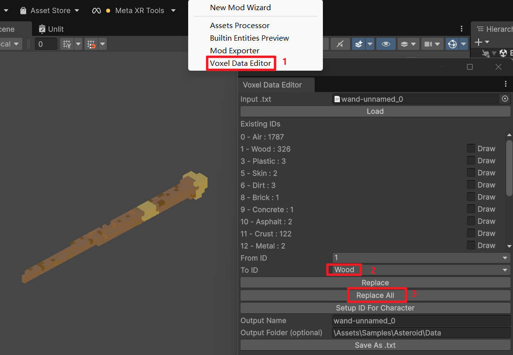
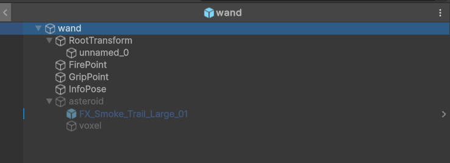

Tutorial: Asteroid Wand
This tutorial guides you through creating a custom "Asteroid Wand" mod. This weapon will fire asteroid projectiles that can penetrate objects and explode on impact. You can find the complete source code and assets for this mod in the modding toolkit's Assets/Samples/Asteroid folder.
Step 1: Creating the Voxel Models
First, we need to create the visual models for the wand and the asteroid. You can design these in a voxel editor like MagicaVoxel or convert existing 3D models using tools like Online Voxelizer.
Important Note on Material IDs
When importing models from external tools, the color palette indices often do not match the game's Material ID system. For example, a generic voxelizer might fill the palette arbitrarily. We will correct the material IDs in the Voxel Data Editor later.

For the asteroid, we want it to have high hardness to penetrate obstacles. Referring to the Material ID Mapping and Material ID Table, we choose a Color Index that corresponds to a hard material. In this example, we use ColorID 161, which maps to the PierceBullet material.

Step 2: Importing and Configuring Assets
Next, we import the .vox files into the game project.
- Open the Asset Processor.
- Import your wand and asteroid
.voxfiles. - Click Convert to generate the prefabs.
After conversion, we need to fine-tune the material properties of the wand using the Voxel Data Editor. Since the wand should feel like wood, we replace the imported voxel IDs with the Wood material ID.

Step 3: Prefab Setup
Now we configure the prefabs.
The asteroid serves as the projectile for the wand, so it does not need to be a standalone spawnable item in the game menu. We will reference it directly in the wand's logic.
- Open the Wand Prefab.
- Ensure the Asteroid Prefab is set up with a particle system to create a smoke trail effect.
- Assign the asteroid prefab to the wand's script component (which we will create in the next step).
The final hierarchy and setup should look similar to the image below:

Step 4: Scripting the Logic
We need to create two custom entity classes: EntityAsteroid for the projectile and EntityAsteroidWand for the weapon.
The Asteroid Entity
The EntityAsteroid class handles the explosion logic. It listens for collision events and triggers an explosion effect when it hits a building or obstacle.
Note: We must manually register and unregister the collision callbacks (RegisterOnCollisionEnter) in the OnEnable and OnDisable methods. For more details, see Collision Callback Registration.
using Rigidbody = Px5.Unity.PxRigidBody;
using Collision = Px5.UnityExtensions.Collision;
public class EntityAsteroid : EntityExplosive
{
private Rigidbody myRigidBody;
// Start is called once before the first execution of Update after the MonoBehaviour is created
void OnEnable()
{
myRigidBody = GetComponent<Rigidbody>();
if (myRigidBody != null)
{
myRigidBody.RegisterOnCollisionEnter(OnCollisionEnter);
}
}
void OnDisable()
{
if (myRigidBody != null)
{
myRigidBody.UnregisterOnCollisionEnter(OnCollisionEnter);
}
}
protected override void OnCollisionEnter(Collision collision)
{
var rb = collision.rigidbody;
if (rb == null) return;
if (rb.gameObject.layer != LayerMasksHelper.layerMask_Building)
{return;
}
base.OnCollisionEnter(collision);
SpecialEffectManager.Instance.Play("NuclearBomb_Explode", transform.position, 3.0f).transform.localScale = Vector3.one * 8;
SoundManager.Instance.PlaySoundOneShotAt("Explosion_Nuke", transform.position);
GameObject.Destroy(gameObject, 1.0f);
}
}
The Wand Entity
The EntityAsteroidWand class extends EntityHoldWeapon (see Entity System). This base class handles the input for holding and firing weapons. When the trigger is pressed, it instantiates the asteroid prefab and applies velocity.
Because we assigned the PierceBullet material (high hardness) to the asteroid earlier, it will naturally penetrate softer objects upon impact. For more on this mechanic, refer to Penetration Mechanics.
using Rigidbody = Px5.Unity.PxRigidBody;
public class EntityAsteroidWand : EntityHoldWeapon
{
public GameObject asteroidPrefab;
public float spawnDistance = 50.0f;
public float spawnHeight = 200.0f;
public float spawnVelocity = 50;
private Transform mainCamTransform;
protected override void Start()
{
base.Start();
mainCamTransform = Camera.main?.transform;
}
public override void FireOnce()
{
if (asteroidPrefab == null || mainCamTransform == null)
return;
GameObject asteroid = GameObject.Instantiate(asteroidPrefab, transform.position + mainCamTransform.forward * spawnDistance + Vector3.up * spawnHeight, Quaternion.identity) as GameObject;
asteroid.transform.parent = null;
asteroid.SetActive(true);
var rigidbody = asteroid.GetComponent<Rigidbody>();
if (rigidbody)
{
var direction = mainCamTransform.forward * spawnVelocity * 0.1f - mainCamTransform.right * spawnVelocity * 0.1f + Vector3.down * spawnVelocity;
rigidbody.velocity = direction;
}
GameObject.Destroy(asteroid, 10.0f);
}
}
Step 5: Config the manifest
Locate the ModManifest file within your mod folder. This file is crucial for defining your mod's metadata and export settings.

- Export Prefabs: You will need to assign the Prefabs you generate (from Vox files) to this list to ensure they are included in the final build.
Step 6: Test and Publish
Finally, test your mod in the local environment to ensure the physics and effects work as expected. Once satisfied, you can publish it.